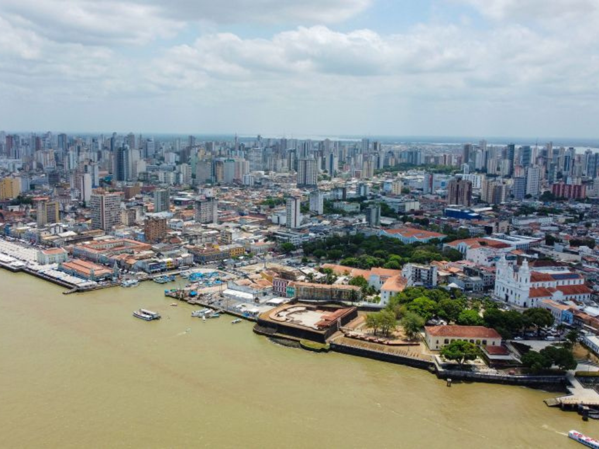

O Amapá, situado no extremo norte do Brasil e cortado pela Linha do Equador, é considerado o estado mais preservado do país, com grande parte de seu território protegida por parques e reservas ambientais. Banhado pelo Oceano Atlântico e pelo Rio Amazonas, possui uma localização estratégica que mistura a influência amazônica com a proximidade das Guianas. Sua capital, Macapá, é a única capital brasileira sem acesso por rodovia a outros estados, destacando-se por monumentos icônicos como a Fortaleza de São José e o Marco Zero, onde é possível observar o equinócio.
